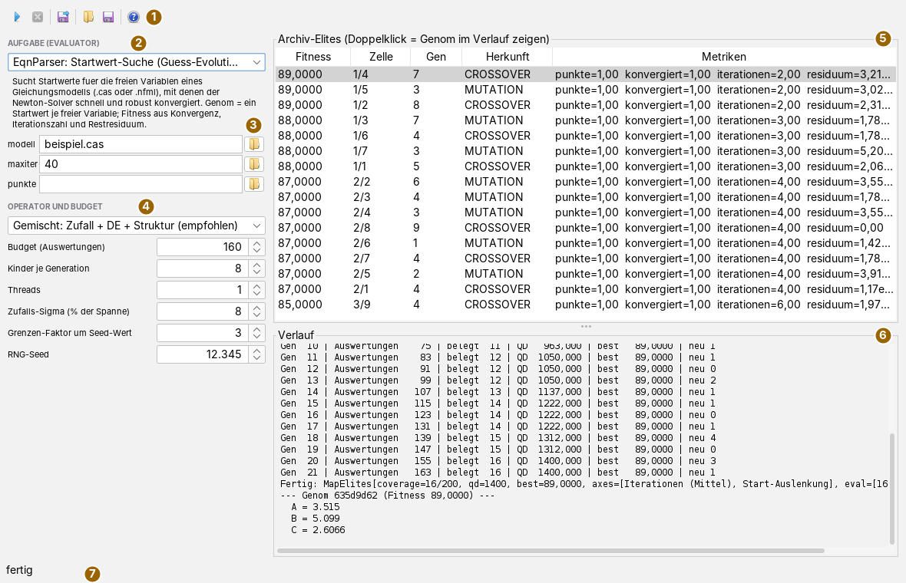
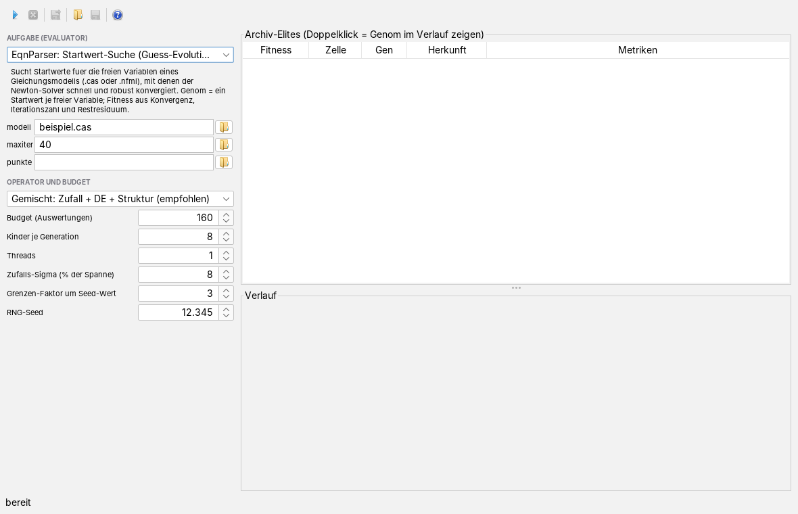
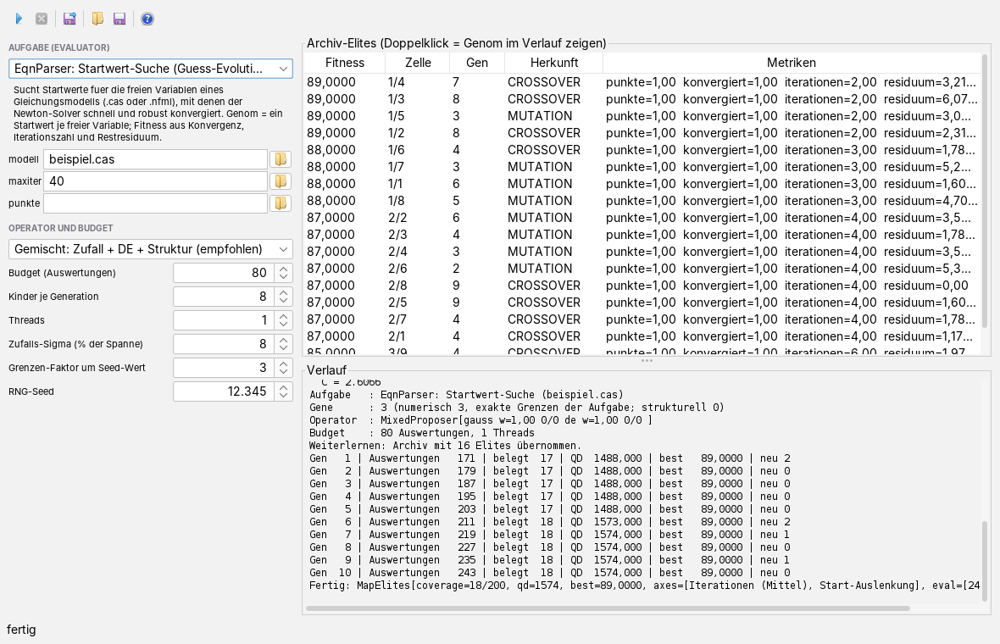

Die Lernwerkbank bedienen
Bedienseite, Stand 07.10.2026. Wie man eine Aufgabe wählt, Suchverfahren und Budget einstellt, eine Suche laufen lässt, das Archiv liest, auf einem Archiv weiterlernt und das beste Ergebnis als Vorgabedatei herausgibt. Die Bilder sind Bildschirmfotos der App während einer echten, kleinen Suche: Die mitgelieferte Startwertsuche des Gleichungslösers sucht Startwerte für ein frei erfundenes Modell aus drei Gleichungen mit drei Unbekannten A, B und C, das zwei Lösungen hat.
Das Fenster
Die App öffnet man im Menü Anwendungen mit Learning-Werkbank öffnen… oder mit Alt+G. Oben liegt die Werkzeugleiste, links die Einstellungen, rechts das Archiv und darunter der Verlauf.

Die linke Spalte ist 340 Bildpunkte breit und rollt, wenn das Fenster zu niedrig ist. Die Trennlinie zwischen Archiv und Verlauf lässt sich verschieben.
MAP-Elites und das Archiv in Kürze
Eine gewöhnliche Suche behält am Ende einen Sieger. Die Werkbank sucht nach dem Verfahren MAP-Elites und behält viele: Die Aufgabe nennt zwei oder mehr Merkmale einer Lösung, ihre Achsen, und teilt jede in gleich breite Abschnitte. Daraus entsteht ein Gitter von Zellen. Jeder bewertete Kandidat fällt nach seinen Merkmalen in genau eine Zelle; Werte außerhalb des Bereichs zählen zur Randzelle. Ist die Zelle leer oder ist der Kandidat besser als ihr bisheriger Bewohner, wird er dessen Nachfolger; sonst wird er verworfen. Der Bewohner einer Zelle heißt Elite, die Sammlung aller Elites das Archiv. Ungültige Bewertungen, etwa ein Lauf, der nicht konvergiert ist, kommen nie hinein.
Neue Kandidaten entstehen aus Elites: Die Werkbank zieht je Generation zwei Eltern, jeden zu 35 % aus dem besten Viertel des Archivs und sonst gleichmäßig aus allen Elites, und der gewählte Operator macht daraus die Kinder der Generation; dabei sieht er auch die sechs besten Elites. Weil auch Elites aus abgelegenen Zellen Eltern werden, bleibt die Suche breit. Am Ende hat man nicht nur die beste Lösung, sondern zu jeder Ecke des Merkmalsraums die beste, die gefunden wurde.
Im Beispiel der Bilder sind die Merkmale der Startwertsuche die mittlere Zahl der Löseriterationen (0 bis 40 in 20 Abschnitten) und die Auslenkung der Startwerte von der Mitte ihres Bereichs (0 bis 1 in 10 Abschnitten); das Gitter hat also 200 Zellen. Die Zelle 1/4 heißt: zweiter Abschnitt der ersten Achse (2 bis unter 4 Iterationen), fünfter der zweiten (Auslenkung 0,4 bis unter 0,5); gezählt wird ab 0.
Die Werkzeugleiste
Die Knöpfe tragen nur Symbole; was sie tun, steht im Tooltip. Gesperrt ist, was gerade nicht geht: Abbrechen nur während eines Laufs, Genom und Archiv speichern erst nach einem Lauf mit Ergebnis.
| Symbol | Tooltip | Was geschieht |
|---|---|---|
 | Suche starten | Startet die Suche mit den Einstellungen links (siehe Eine Suche laufen lassen). Während des Laufs gesperrt. |
 | Suche abbrechen (nach der laufenden Generation) | Die gerade bewertete Generation läuft zu Ende, dann hält die Suche an. Archiv und Tabelle bleiben; die Statuszeile sagt abgebrochen. |
| Genom speichern… — gewählte Tabellenzeile, sonst die beste, als Vorgabedatei | Schreibt das Genom als Vorgabedatei (siehe Ergebnis herausgeben). | |
 | Archiv laden… — Gespeichertes Archiv laden – der nächste Start setzt darauf auf (muss zum gewählten Evaluator passen; Providerwechsel verwirft es) | Liest ein gespeichertes Archiv; der nächste Start setzt darauf auf (siehe Weiterlernen). |
 | Archiv speichern… — MAP-Elites-Archiv des letzten Laufs als Verzeichnis sichern (axes.properties + je Elite eine elite-*.properties) | Schreibt das Archiv des letzten Laufs in ein Verzeichnis. |
 | Hilfe: öffnet die Doku zu dieser App (wie F1) | Öffnet diese Seite in der Doku-App. Ist keine Doku-App im Starter, geschieht nichts. |
Die Einstellungen
| Feld | Bedeutung |
|---|---|
| Aufgabe (Evaluator) | Was gesucht wird. Die Liste zeigt alle Aufgaben, die andere Apps des Starters anbieten, nach Namen sortiert; darunter steht die Beschreibung der gewählten Aufgabe. Mitgeliefert sind die Startwertsuche des Gleichungslösers (aus der EqnParser-App) und die Suche nach Einstellungen für das Nachzeichnen von Kurven (aus dem Image Digitizer). Findet die App keine Aufgabe, ist Suche starten gesperrt, und der Verlauf sagt, wie Aufgaben angemeldet werden. |
| Eingaben | Je Eingabe der Aufgabe eine Zeile: Name, Textfeld und Dateiwähler. Der Tooltip des Namens und des Felds erklärt, was verlangt ist. Die Startwertsuche fragt nach modell (Modelldatei .cas oder .nfml), maxiter (Iterationen je Bewertung, leer heißt 100) und wahlweise punkte (Betriebspunkte als CSV; dann zählt zuerst, wie viele Punkte konvergieren). Ein relativer Pfad gilt vom Startverzeichnis des Programms aus. |
| Operator | Wie aus Eltern Kinder werden, siehe Operatoren. Vorgabe: Gemischt. |
| Budget (Auswertungen) | Wie viele Kandidaten dieser Lauf bewerten darf, 10 bis 100 000, Vorgabe 200. Geprüft wird vor jeder Generation; die letzte läuft ganz durch, der Lauf kann also bis zu einer Generation minus eins darüber enden. Die Bewertung der Startwerte und die Elites eines übernommenen Archivs zählen nicht mit. |
| Kinder je Generation | Wie viele Kandidaten je Generation vorgeschlagen und gemeinsam bewertet werden, 1 bis 64, Vorgabe 8. |
| Threads | Wie viele Bewertungen gleichzeitig laufen, 1 bis 64, Vorgabe: Zahl der Prozessorkerne minus eins. Mehr als Kinder je Generation bringt nichts. |
| Zufalls-Sigma (% der Spanne) | Schrittweite der Zufallsmutation in Prozent des Bereichs eines Gens, 0,5 bis 50, Vorgabe 8; je Kind werden höchstens drei Gene verändert. Bei CMA-ES ist es die Anfangsschrittweite, bezogen auf die mittlere Spanne aller Gene. |
| Grenzen-Faktor um Seed-Wert | Nur wenn die Aufgabe keine eigenen Grenzen für die Gene liefert: Ein Gen mit dem Startwert v wird zwischen v/Faktor und v·Faktor gesucht, ein Startwert 0 zwischen −1 und 1. 1,1 bis 20, Vorgabe 3. Die Startwertsuche liefert eigene Grenzen (aus den Grenzen der Variablen im Modell, ersatzweise einer Spanne um den Vorgabewert); dann wirkt das Feld nicht, und der Verlauf sagt exakte Grenzen der Aufgabe. |
| RNG-Seed | Startwert des Zufallsgenerators, Vorgabe 12345. Gleiche Aufgabe, gleiche Eingaben und gleiche Einstellungen ergeben denselben Lauf; die deutschen und englischen Bilder dieser Seite zeigen deshalb dieselben Elites und Werte. |
Operatoren
| Operator | Was er tut |
|---|---|
| Gemischt: Zufall + DE + Struktur (empfohlen) | Wählt je Kind zufällig zwischen Zufallsmutation und Differentieller Evolution, anfangs gleich gewichtet; hat die Aufgabe nicht-numerische Gene (Aufzählungen, Wahrheitswerte), kommt mit halbem Gewicht eine Strukturmutation dazu. Die Gewichte folgen langsam der Trefferquote: Ein Operator, dessen Kinder öfter ins Archiv kommen, wird öfter gezogen. Der Zufallsanteil füllt das Archiv am Anfang, bis die Differentielle Evolution genug Elites hat. |
| Zufallsmutation (Gauß) | Verändert bis zu drei Gene eines Elternteils um normalverteilte Schritte der Größe Zufalls-Sigma. |
| Differentielle Evolution (rand/1) | Nimmt die Eltern und die sechs besten Elites als Bevölkerung, zieht daraus ein Ziel und drei weitere verschiedene Mitglieder a, b, c, bildet a + 0,7 · (b − c) und ersetzt jedes Gen des Ziels mit Wahrscheinlichkeit 0,9 durch das entsprechende dieses Probevektors, mindestens eines. Die Schrittweite kommt so aus der Streuung des Archivs selbst. Braucht mindestens vier verschiedene Mitglieder, sonst schlägt sie nichts vor; die Kinder tragen die Herkunft CROSSOVER. |
| Differentielle Evolution (best/1) | Wie rand/1, aber mit der besten Elite als a; sucht enger um den bisher Besten. |
| CMA-ES (Kovarianz, tell-gestützt) | Lernt aus den Bewertungen eine Verteilung, die sich der Form des Gütegebirges anpasst, und zieht daraus die Kinder; beginnt beim Startwert der Aufgabe. |
| Ersatzmodell (Kernregression, tell-gestützt) | Schätzt die Fitness aus allen bisherigen Bewertungen als abstandsgewichtetes Mittel und schlägt dort vor, wo Schätzwert und Unsicherheit (Abstand zum nächsten bewerteten Punkt) zusammen am höchsten sind. Lohnt sich bei teuren Bewertungen. |
Reine Differentielle Evolution mit nur einem Startwert schlägt nichts vor, weil ihr die vier Elites fehlen. Nach 1000 Generationen ohne Vorschlag endet der Lauf, die Statuszeile sagt vorzeitig beendet (keine Vorschläge). Abhilfe: zuerst mit Gemischt oder der Zufallsmutation ein Archiv füllen und dann weiterlernen.
Eine Suche laufen lassen

- Die Aufgabe wählen. Die Eingabezeilen richten sich nach ihr.
- Die Eingaben ausfüllen, von Hand oder mit dem Ordnersymbol daneben.
- Operator und Budget setzen. Für den Anfang genügt Gemischt; das Budget richtet sich nach der Dauer einer Bewertung (im Beispiel einige Millisekunden, beim Nachzeichnen von Kurven rund 2,5 Sekunden).
- Suche starten drücken. Die Werkbank legt die Aufgabe an, bewertet zuerst die Startwerte der Aufgabe und dann Generation um Generation. Scheitert schon das Anlegen, etwa weil eine Datei fehlt, steht der Grund im Verlauf und in der Statuszeile.
- Zusehen: Nach jeder Generation kommt eine Zeile in den Verlauf, und die Tabelle wird neu gefüllt. Die Oberfläche bleibt bedienbar.
Zu Beginn schreibt der Verlauf, womit gesucht wird:
| Zeile | Inhalt |
|---|---|
| Aufgabe | Name der Aufgabe, wie sie sich selbst nennt |
| Gene | Zahl der Gene, davon numerisch, woher die Grenzen kommen, und wie viele nicht-numerisch (strukturell) sind |
| Operator | der Operator mit seinen inneren Einstellungen |
| Budget | Auswertungen und Threads |
Danach eine Zeile je Generation:
| Spalte | Bedeutung |
|---|---|
| Gen | Nummer der Generation in diesem Lauf |
| Auswertungen | alle Bewertungen, die das Archiv bisher gesehen hat, einschließlich der Startwerte und, beim Weiterlernen, der früheren Läufe |
| belegt | Zahl der Zellen mit einer Elite |
| QD | Summe der Fitness aller Elites. Sie wächst mit der Güte und mit der Zahl belegter Zellen; aussagekräftig nur, solange die Fitness nicht negativ ist. |
| best | beste Fitness im Archiv |
| neu | in dieser Generation ins Archiv aufgenommene Kandidaten |
Am Ende steht Fertig mit einer Kurzfassung des Archivs: belegte und mögliche Zellen, QD, beste Fitness, Achsen und die Zähler Einfügeversuche, Verbesserungen, Ablehnungen.
Das Archiv lesen
Die Tabelle Archiv-Elites hat eine Zeile je belegter Zelle, die beste oben.
| Spalte | Bedeutung |
|---|---|
| Fitness | Güte nach der Aufgabe, größer ist besser. Bei der Startwertsuche zählt jeder konvergierte Betriebspunkt maxiter + 10, dazu kommen eingesparte Iterationen und ein Anteil für ein kleines Restresiduum. Im Beispiel: 1 · 50 + (40 − 2) + knapp 1 ≈ 89. |
| Zelle | Abschnitt je Achse, ab 0 gezählt, durch / getrennt |
| Gen | Generation, in der die Elite entstand |
| Herkunft | SEED (Startwert der Aufgabe), MUTATION (aus einem Elternteil verändert), CROSSOVER (aus zwei Eltern zusammengesetzt) oder REPAIR (nachträglich in den gültigen Bereich geholt; setzt kein mitgelieferter Operator) |
| Metriken | die ersten vier Kennzahlen, die die Aufgabe zur Bewertung mitliefert; weitere sind durch „…“ angedeutet. Bei der Startwertsuche: Zahl der Punkte, davon konvergiert, mittlere Iterationen, größtes Restresiduum. |
Ein Doppelklick auf eine Zeile schreibt ihr Genom in den Verlauf: Kennung, Fitness und je Gen eine Zeile Name = Wert. Im Bild sind das die Startwerte A, B und C, mit denen der Löser in zwei Iterationen konvergiert. Die Zellen darunter zeigen, wie gut es mit Startwerten geht, die weiter von der Mitte ihres Bereichs liegen: Mit dem Archiv sieht man auch, wie robust eine Aufgabe auf andere Startwerte reagiert, nicht nur den Sieger.
Weiterlernen

Nach jedem Lauf merkt sich die Werkbank das Archiv, und der nächste Start setzt darauf auf: Der Verlauf meldet Weiterlernen: Archiv mit … Elites übernommen, die Startwerte werden nicht noch einmal bewertet, und das Budget gilt für die neuen Auswertungen. Wechselt man die Aufgabe oder ändert eine Eingabe, wird das gemerkte Archiv verworfen, und der Verlauf sagt es; der nächste Lauf beginnt leer.
Über Sitzungen hinweg trägt das gespeicherte Archiv. Archiv speichern… fragt nach einem Verzeichnis (es wird angelegt oder ersetzt) und schreibt darin axes.properties mit den Achsen und je Elite eine Datei elite-0000.properties, elite-0001.properties und so fort: das Genom und, unter Schlüsseln mit Unterstrich, Fitness, Merkmale, Kennzahlen, Generation und Herkunft. Archiv laden… liest ein solches Verzeichnis; fehlt axes.properties, meldet die App, dass es kein Archiv ist. Ob ein geladenes Archiv zur gewählten Aufgabe passt, prüft sie nicht; das Archiv sollte also mit derselben Aufgabe und denselben Eingaben entstanden sein. Erst die Aufgabe wählen, dann laden: ein späterer Aufgabenwechsel verwirft das geladene Archiv.
Ergebnis herausgeben
Genom speichern… schreibt das Genom der gewählten Tabellenzeile oder, wenn keine gewählt ist, der besten Elite in eine Textdatei, vorgeschlagen als bestes-genom.properties. Oben stehen als Kommentar die Herkunft (Lern-App und Aufgabe), Fitness und Generation, darunter je Gen eine Zeile Name=Wert. Die Datei hat das Genomformat des Suchrahmens und lässt sich dort laden, wo eine App solche Vorgaben annimmt, etwa in der Nachzeichnungsstufe des Image Digitizers. Auch jede Elite-Datei eines gespeicherten Archivs ist eine solche Vorgabe.
Was gespeichert wird
Beim Sichern des Arbeitsbereichs merkt sich die App die gewählte Aufgabe, den Operator, das Budget und die Eingaben und stellt sie beim nächsten Öffnen wieder her. Ein unlesbarer oder nicht mehr passender Wert wird übergangen, der Rest kommt trotzdem an. Nicht gemerkt werden Kinder je Generation, Threads, Zufalls-Sigma, Grenzen-Faktor und RNG-Seed sowie das Archiv; das Archiv behält man mit Archiv speichern…. Wird die App geschlossen, während eine Suche läuft, fragt sie nach und bricht die Suche ab.
Tastatur und Maus
Alt+G öffnet die App, F1 diese Seite. Ein Doppelklick auf eine Zeile der Tabelle zeigt ihr Genom im Verlauf; ein einfacher Klick wählt die Zeile für Genom speichern…. Die Trennlinie zwischen Tabelle und Verlauf lässt sich mit der Maus verschieben. Weitere Tastenkürzel hat die App nicht.
Grenzen
- Es läuft immer nur eine Suche zugleich; Abbrechen wirkt erst nach der laufenden Generation, bei langsamen Aufgaben also mit Verzögerung.
- Der Verlauf ist Text; ein Diagramm des Gütenverlaufs und eine Ansicht des Gitters fehlen noch.
- Namen, Beschreibungen, Eingaben, Achsen und Kennzahlen kommen von der Aufgabe selbst. Die beiden mitgelieferten Aufgaben haben sie nur auf Deutsch; in der englischen Oberfläche erscheinen sie deshalb deutsch.
- Leitet die Werkbank die Grenzen aus dem Startwert ab, werden nur Gene mit einer Zahl als Startwert gesucht; Aufzählungen und Wahrheitswerte verändert nur die Strukturmutation in Gemischt.
- Bewertungen laufen parallel; eine Aufgabe muss das vertragen. Die mitgelieferten tun es.
Was die App kann und worauf sie aufbaut, steht in der Übersicht; das Suchverfahren selbst beschreibt framework-evolve.
Symbole: Fugue Icons von Yusuke Kamiyamane, Lizenz CC BY 3.0.